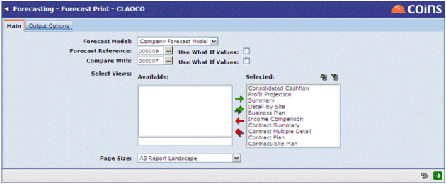

The final section of the Options menu allows the current forecast to be compared to any previous forecast. All other forecasts will be listed here and the user can simply select which one they wish to produce a comparison with. This will present the Forecast Print screen with the forecast number for comparison already inserted:

NOTE